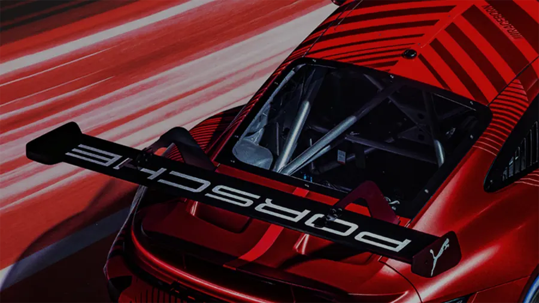
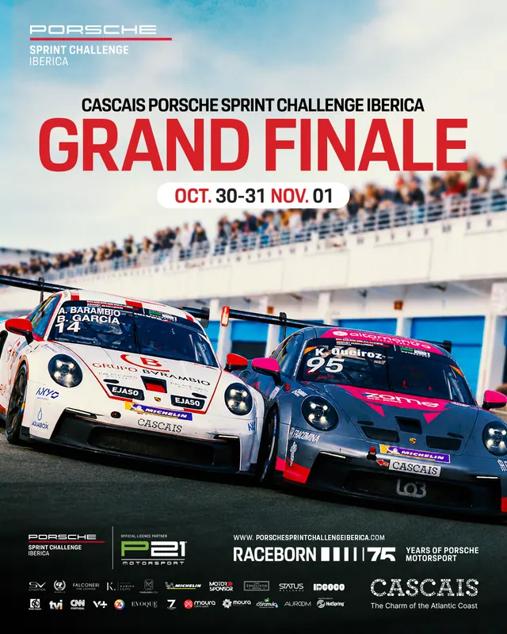
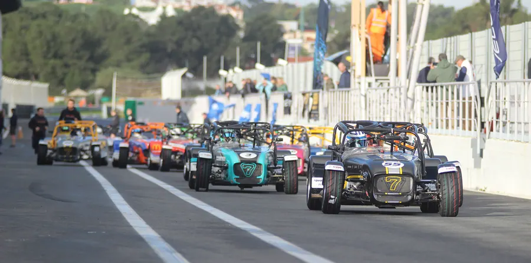
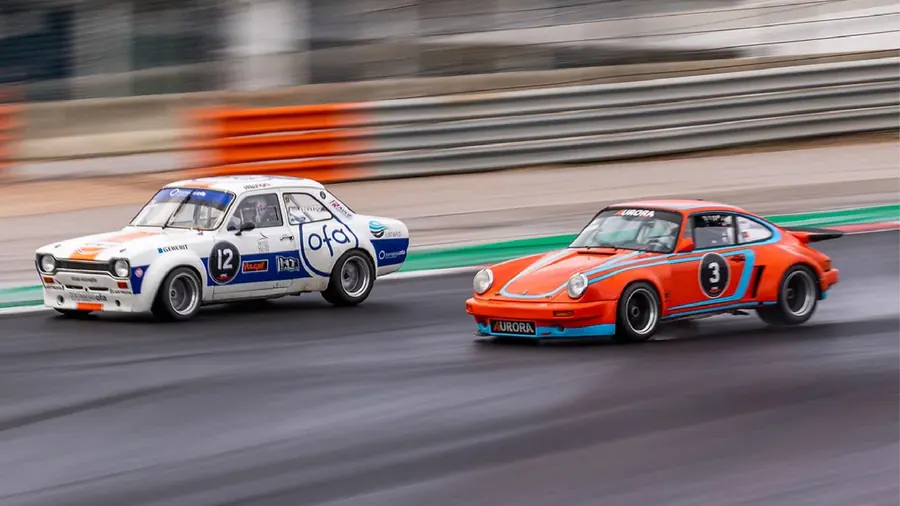
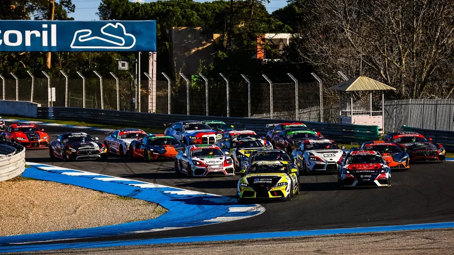
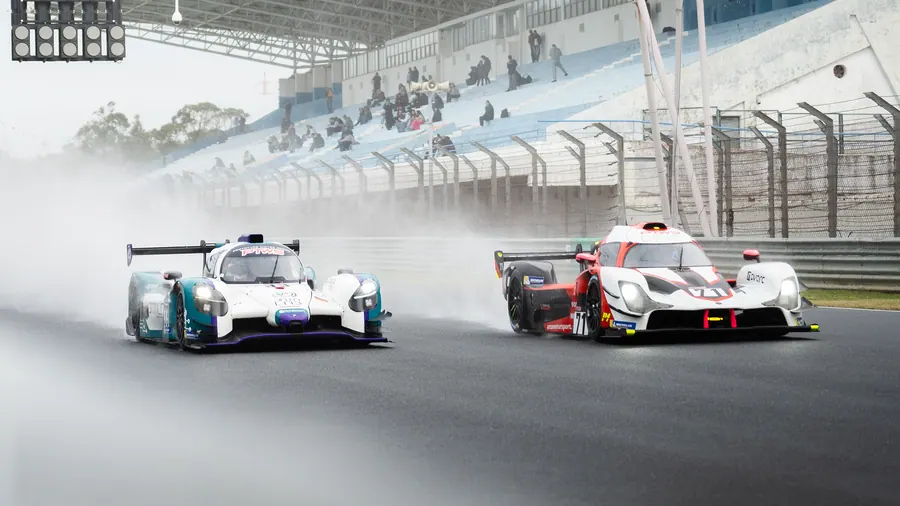
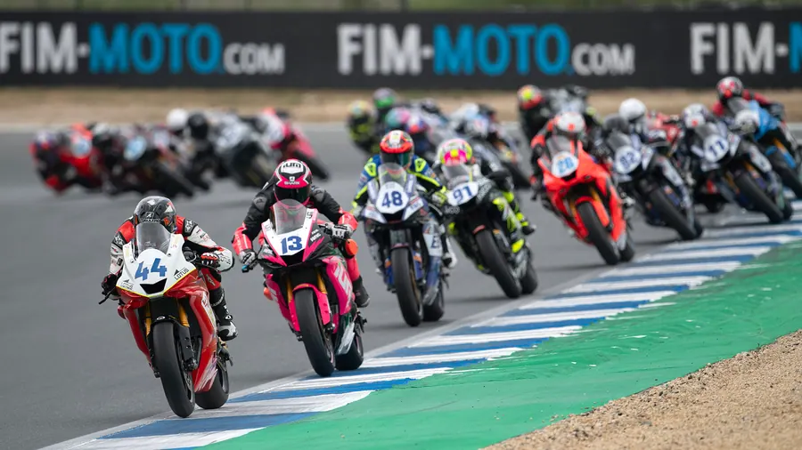
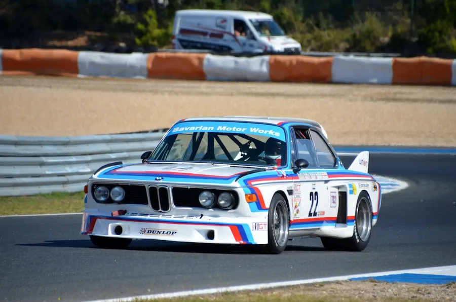
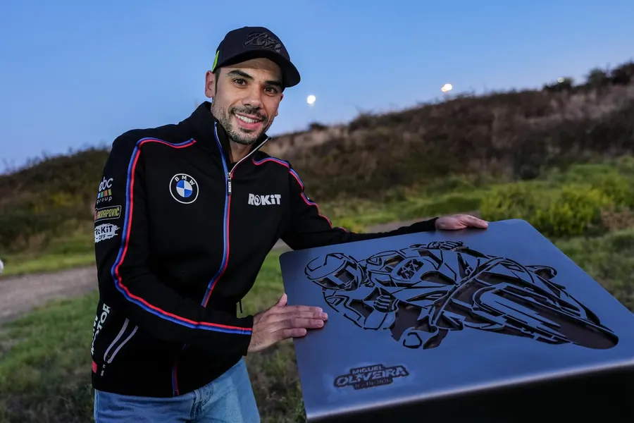

01Manhã · Chegada
Circuito Estoril
“Autódromo Fernanda Pires da Silva” · “Autódromo do Estoril”
Próximo evento 13/14 Nov Caterham Fest 2026 CRM MOTORSPORT01Manhã · Chegada
“Autódromo Fernanda Pires da Silva” · “Autódromo do Estoril”
Próximo evento 13/14 Nov Caterham Fest 2026 CRM MOTORSPORT02Boxes · Preparação
O aluguer da infraestrutura desportiva denominada “Autódromo Fernanda Pires da Silva” ou “Autódromo do Estoril”, bem como a contratação de serviços de apoio à realização na mesma de eventos desportivos motorizados estão, obrigatoriamente, sujeitos ao cabal cumprimento do seguinte procedimento:
COMUNICADO II – 19/09/2025
A CE, comprometida com um espírito de melhoria contínua das condições de operação do Circuito do Estoril e dos efeitos na sua envolvente, informa ter deliberado excluir no início de agosto de 2025 os track days de motos da listagem de eventos admitidos no circuito, numa medida que excede as limitações que haviam sido impostas pela decisão judicial acima referida.
03Em pista
04Paddock · Património

PORSCHE SPRINT CHALLENGE IBÉRICA | GRAND FINALE 2026 MAIS HISTÓRIA A SER ESCRITA: Bulega supera recorde de pontos de longa data de Rea com vitória na Corrida 2 no Estoril
MAIS HISTÓRIA A SER ESCRITA: Bulega supera recorde de pontos de longa data de Rea com vitória na Corrida 2 no Estoril
 DE VOLTA AO TOPO: Bulega regressa ao lugar mais alto do pódio à frente de Lecuona; Surra conquista pódio no Estoril
DE VOLTA AO TOPO: Bulega regressa ao lugar mais alto do pódio à frente de Lecuona; Surra conquista pódio no Estoril
Inaugurado a 17 de Junho de 1972, o Circuito do Estoril teve de esperar até 1982 para se ver incluído no Campeonato FIA F2, o que acabou por, em 1984, abrir as portas do Autódromo do Estoril à “creme de la creme” do automobilismo internacional, o Campeonato do Mundo de Fórmula Um, competição que recebeu até 1996… Ler a história →
05Final · Golden hour
Ilustração 3D — traçado do circuito real; relevo e envolvente ilustrativos.
Deslize para começar
Calendário
Ainda não há conteúdos nesta categoria.

31out2026 PSC Iberica – Round 6 31Out / 01 NovOrganização: P21 Motorsport Ver evento
13nov2026 Caterham Fest 2026 Organização: CRM MOTORSPORT Ver evento
21nov2026 ANPAC #2 / 2026 21/22 NovOrganização: ANPAC Ver evento
04dez2026 Estoril Endurance Festival 2026 04/06 DezOrganização: Race Ready Ver evento
21jan2027 Winter Series 2027 21/24 Jan 2027Organização: GEDLICH RACING Ver evento
02mai2027 FIM MOTOJunior WC 2027 02 Mai 27Organização: FIM Junior GP Ver evento
08out2027 ESTORIL CLASSICS 2027 08/10 Out 27Organização: Estoril Classics Ver evento 15out2027
WSBK 2027
15/17 Out 27Organização: WSBK Ver evento
15out2027
WSBK 2027
15/17 Out 27Organização: WSBK Ver evento
Notícias e reportagens
MAIS HISTÓRIA A SER ESCRITA: Bulega supera recorde de pontos de longa data de Rea com vitória na Corrida 2 no Estoril
MAIS HISTÓRIA SENDO ESCRITA: Bulega supera recorde de pontos de longa data de Rea com vitória na Corrida 2 no Estoril TEXTO: WorldSBK /…
DE VOLTA AO TOPO: Bulega regressa ao lugar mais alto do pódio à frente de Lecuona; Surra conquista pódio no Estoril
DE VOLTA AO TOPO: Bulega regressa ao lugar mais alto do pódio à frente de Lecuona; Surra conquista pódio no Estoril FONTE & FOTO: WorldSBK…
WORLDSBK – SEXTA-FEIRA: Bulega supera Surra e Lecuona, mas por pouco por pouco; Oliveira impressiona com 4º lugar em casa.
WORLDSBK – SEXTA-FEIRA: Bulega supera Surra e Lecuona, mas por pouco por pouco; Oliveira impressiona com 4º lugar em casa. FONTE e FOTO:…

Curva 7 do Estoril, é agora, Curva Miguel Oliveira Circuito Estoril imortaliza Miguel Oliveira com o batismo da Curva 7 durante o Mundial de Superbikes PHOTO: PEDRO BRYTON A icónica Curva 7…Circuito Estoril
A CE – Circuito Estoril, S.A. informa que, tendo em vista encontrar modelos alternativos para a otimização da gestão da infraestrutura desportiva denominada “Autódromo Fernanda Pires da Silva” ou “Autódromo do Estoril”, será lançado em breve, no estrito cumprimento do enquadramento legal que enforma a atividade da Sociedade, um procedimento de consulta ao mercado para a constituição de um direito real de superfície sobre o imóvel no qual a citada infraestrutura e respetivas instalações de apoio se encontram implantadas.
Estando atualmente em curso várias diligências que se revelam necessárias para assegurar a cabal instrução do acima mencionado procedimento de consulta ao mercado, dá-se nota de que as peças documentais que fixarão os respetivos termos e condições serão atempadamente publicitadas no website da Sociedade, ficando a respetiva consulta disponível a qualquer interessado.
Entretanto, a Sociedade continuará a desenvolver a respetiva atividade, assegurando, no estrito cumprimento das disposições legais, a realização de eventos motorizados na infraestrutura do Autódromo do Estoril.
Como é público, foi proferida em 8 de setembro de 2023 uma decisão judicial que visou regular os níveis de ruído decorrentes do funcionamento do Circuito do Estoril. Esta decisão tem sido integralmente cumprida pela CE – Circuito Estoril, S.A. (“CE”). A CE, comprometida com um espírito de melhoria contínua das condições de operação do Circuito do Estoril e dos efeitos na sua envolvente, informa ter deliberado excluir no início de agosto de 2025 os track days de motos da listagem de eventos admitidos no circuito, numa medida que excede as limitações que haviam sido impostas pela decisão judicial acima referida. Pela sua natureza, esta deliberação não se aplica a eventos desportivos (provas ou competições desportivas), incluindo os treinos destas provas, bem como os treinos em pista de pilotos profissionais desfasados de quaisquer eventos desportivos.
A Circuito de Estoril sempre cumpriu, e continuará a cumprir, as regras legais relativas ao ruído bem como o determinado na sentença proferida pelo Tribunal de Cascais conforme é possível confirmar nos relatórios de monitorização no site da sociedade (Link).
A CE anuncia ainda que, após a decisão de 24 de abril de 2025 de encerramento da Bancada A, não se antecipa uma data expetável para a reabertura da referida infraestrutura.
Por último, a CE informa sobre a política comercial em vigor: (Link)
Traçado oficial
Contorno do traçado conforme o logótipo oficial do Circuito Estoril.
Social
Contactos
Av. Alfredo César Torres · Alcabideche
Google Maps ↗